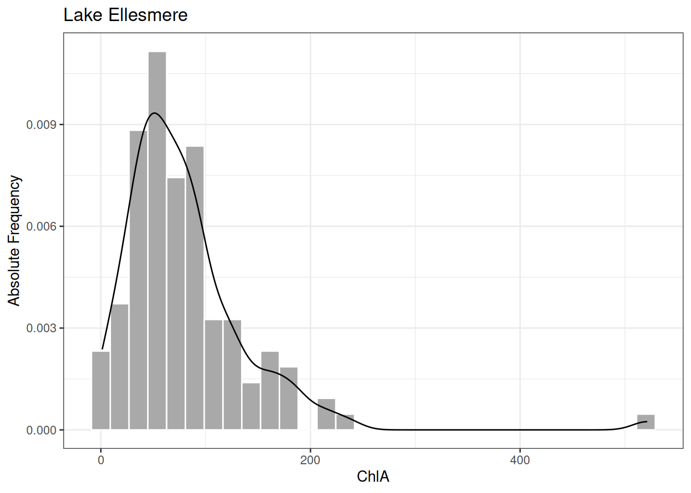

Associated Material
Module: Module 04 - Summarising
Readings
summaryaggregategroup_by and summariseMany scientific data sets have histograms that are “bell-shaped”. That is, most of the values cluster in the middle, and the frequency drops off symmetrically toward smaller and larger scores. The distribution of penguin body mass is a good example of a data set that is approximately bell-shaped.
Many inferential statistical techniques require data sets to be close to a very specific bell-shape called the normal curve. If your data deviate too far from normal, the inferential tests will give incorrect results. The most serious such deviation is skew, which is when the bell-shape tilts to one side, with a long tail in either the smaller or larger direction.
The penguin body mass graph is not perfectly symmetrical. It shows a bit of skewness with a longer tail toward the heavier penguins. But many data sets from nature are extremely skewed. We can see this in the lakes data.
Observe the distribution of ChlA for Lake Ellesmere (shown below with a smoothed density line for illustration). Although most of the readings are clustered below 100, there are some much larger values – one reading is more than 500 – creating a long “tail” to the right. The ChlA measure in Lake Ellesmere is skewed.

We can compute an exact numerical value for the skewness of a
distribution using function skewness from package
e1071. As in the examples on the Module page, we can
compute the skewness for each lake using aggregate, using
group_by and summarise from library
dplyr, or using describeBy from library
psych, which includes skewness among its summary
statistics.
With the method of your choice, compute the skewness value for each of the three lakes. What does the pattern of results tell you about the health of each lake?
A perfectly symmetrical distribution will have a skewness of 0. As a distribution tilts further and further from normal, the absolute value of the skewness measure goes up. What consititutes “too much skew” varies between disciplines, and for an assignment you will want to check with your lecturer. However, a common rule of thumb is that any value greater than 1 (or less than -1) has enough skew that you need to think about dealing with it. A value greater than 3 (as found with the Lake Ellesmere data) is definitely skewed.
As mentioned earlier, many inferential tests give inaccurate results
with skewed data, so in cases like the lakes data, we must “unskew” our
values. A common approach is to compute the natural logarithm of each
data value (using R function log), and analyse those logs
(ask your lecturer about alternative approaches). The logarithm
computation pulls extreme scores in, reducing the skew, without changing
the overall relationships between data values.
In Module 03 you saw how to add a new computed column to a data frame
using either function mutate or the $
operator. Using the technique of your choice, add a column to data frame
lakes that holds the natural log of each ChlA reading.
Using ggplot, make a histogram of all the log ChlA values in data frame lakes, with each lake in a different colour. This code is extremely similar to the example in the Module. How would you describe these distributions? Are Lake Ellesmere’s log ChlA values skewed? What can you provide as evidence for your answer?